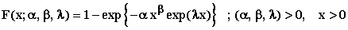
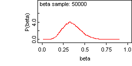
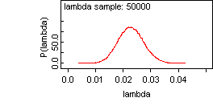
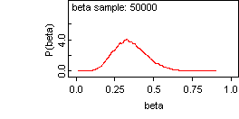
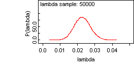

![[modifiedweibull_ex0]](modifiedweibull_ex0.bmp) Modified Weibull Model
Modified Weibull Model

model
{
for( i in 1 : N )
{
x[i] ~ dweib.modified(alpha, beta, lambda)
hrf[i] <- hrf(x[i], x[i])
reliability[i] <- R(x[i], x[i])
}
# Prior distributions of the model parameters
alpha ~ dunif(0.001, 1.0)
beta ~ dunif(0.001, 1.0)
lambda~ dunif(0.001, 1.0)
}
The data set is taken from Aarset(1987).
Lai, C.D. , Xie, M. and Murthy, D.N.P. (2003). A modified Weibull distribution, IEEE Trans. Reliab ., 52, 33–37.
Ng, H.K.T.(2005). Parameter estimation for a modified Weibull distribution, for progressively type-II censored samples, IEEE Trans. Reliab ., 54, 374–380.
Aarset, M.V.(1987). How to identify bathtub hazard rate. IEEE Trans Reliab ., 36(1), 106 –108.
The MLE’s ( Lai et al., 2003) are
alpha = 0.0876 beta = 0.389; lambda = 0 .01512
The linear regression estimates (Ng, 2005) are
alpha = 0.0624 beta = 0.355; lambda = 0 .02332
Data ( click to open )
Inits for chain 1 Inits for chain 2 ( click to open )
Results
![[modifiedweibull_ex4]](modifiedweibull_ex4.bmp) 
